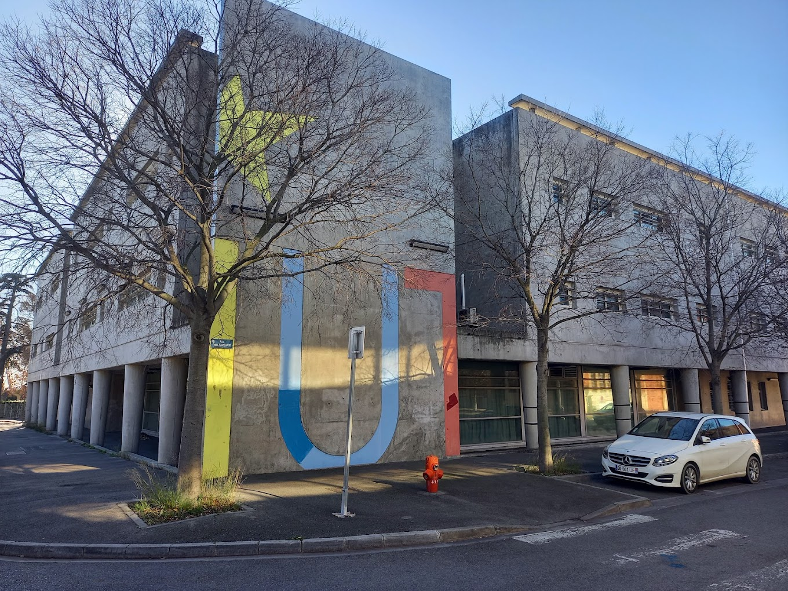
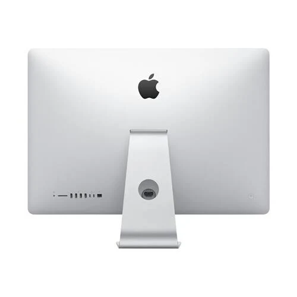
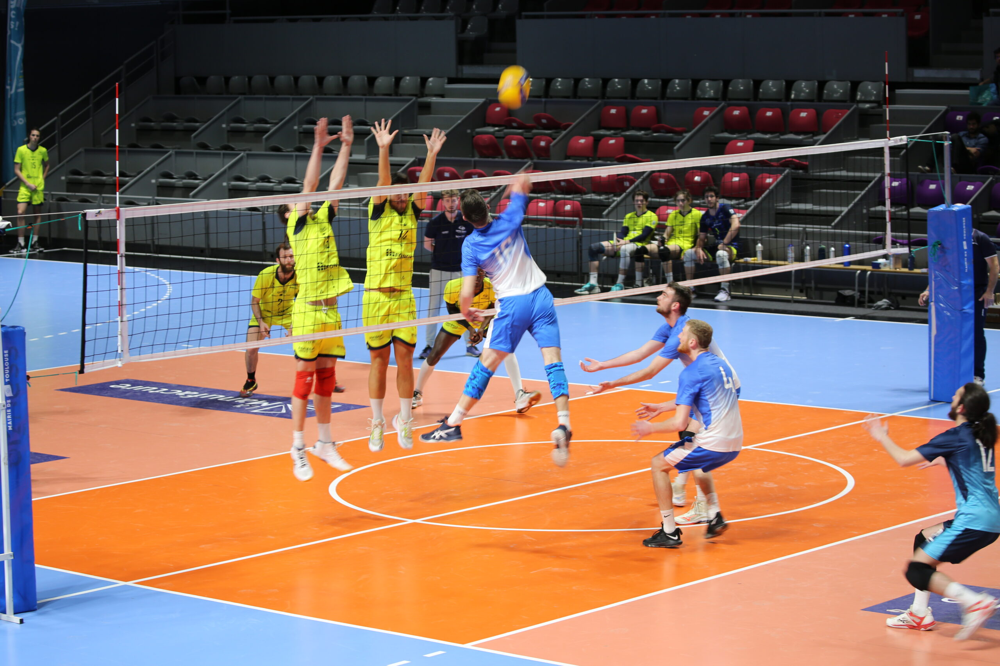

Publicité

Lays : Croquez la vie

HADAFO
MEDIA
Innovation

Xiaomi 14 Pro
FIN DE PARTIE POUR
M. CHIKAOUI
L'enseignant star, connu pour sa traque impitoyable de l'IA, interpellé hier matin. Un enregistrement audio compromettant l'accuse de corruption sur les groupes SAE.
► DÉTAILS DE L'INTERPELLATION PAGE 2



"L'IUT doit rester un lieu d'intégrité"
Mme Szafrajzen, directrice par intérim : « Nous sommes sous le choc. Une enquête interne est ouverte sur la formation des groupes de SAE ».
► ENTRETIEN EXCLUSIF P. 4
L'IA VENGÈRESSE

Le Deepfake de la Justice
Pour le faire tomber, les étudiants ont utilisé l'outil qu'il déteste : une IA génératrice de voix. Le "Deepfake" simulait une conversation où Chikaoui vendait les sujets d'examen en échange de paquets de chips Lays.
► DÉCRYPTAGE P. 5
LA DICTATURE DES CHEFS
Le choix des chefs de groupe SAE par M. Chikaoui avait mis le feu aux poudres. De nombreux étudiants dénonçaient un arbitraire total, loin des principes de méritocratie prônés par l'IUT.
"Il choisissait les chefs selon ses humeurs, nous empêchant d'utiliser nos outils habituels d'IA. C'était devenu invivable", témoigne un délégué.
L'enquête révèle que les étudiants ont monté "l'Opération Turing" : un mois de préparation pour capturer des échantillons vocaux du professeur et entraîner un modèle neuronal capable de cloner sa voix.
La supercherie était si parfaite que la patrouille de police a cru à une véritable transaction illégale dans les bureaux.
► DOSSIER COMPLET P. 6-7
VOX POPULI
— Un étudiant (BUT 1)
Justice ou Vengeance ?
Le débat divise la promo. Si certains saluent l'audace technique, d'autres craignent des sanctions pour l'ensemble du département.
► TÉMOIGNAGES P. 8
ÉQUIPEMENT

Des Mac M3 pour tous
L'IUT déploie sa nouvelle flotte informatique. p. 9
SPORT

Volley : Le massacre d'Aix
L'IUT écrase ses rivaux en finale régionale. p. 11
BILLET D'HUMEUR
L'IA, ce miroir...
"On ne peut interdire le progrès, on ne peut que le comprendre. Chikaoui l'a appris à ses dépens : quand on combat des fantômes, on finit par en devenir un..."
SUITE P. 12 ➔